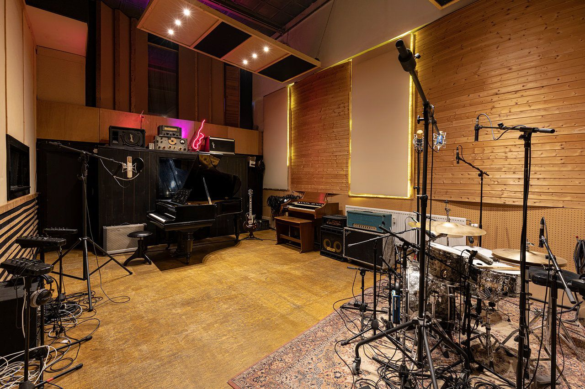
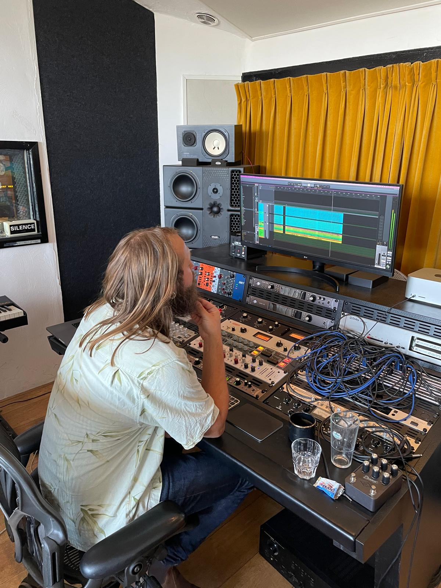

Opnamestudio · Delft, Nederland
Echte instrumenten. Echte ruimtes. Echte apparatuur.
Sessie BoekenDe Studio
Moby Dick Music Studio is een opnamestudio aan de Schieweg in Delft. We geloven dat de beste opnames beginnen met geweldige instrumenten in een geweldige ruimte, vastgelegd via echte preamps en hardware die daadwerkelijk iets doet met het geluid.
Van vleugel en Hammond tot vintage synths en een volledige livezaal. Alles wat je nodig hebt om iets te maken dat écht klinkt, is hier.


Waarom Moby Dick
Neve, 1176, WA2A — hardware compressors en echte preamps van input tot mix. Wat je opneemt klinkt zoals wat je speelt.
Hammond A-100, Minimoog, Rhodes, Wurlitzer, Clavinet, vintage drums. Instrumenten die het geluid van een tijdperk definieerden.
Geen stress, geen haast. Een comfortabele ruimte ontworpen om de beste prestaties naar boven te halen en de sessie soepel te laten verlopen.
Opgenomen Hier
Leif de Leeuw Band — opgenomen en geproduceerd bij Moby Dick Music Studio.
Klaar om op te nemen?
Neem contact op en we regelen een datum en tarief dat voor jou werkt.
Sessie Boeken